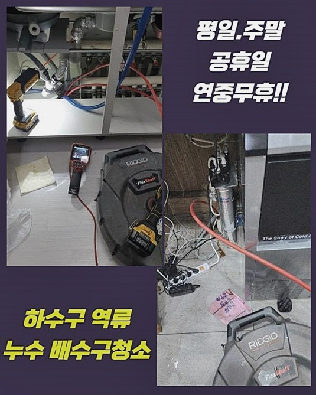
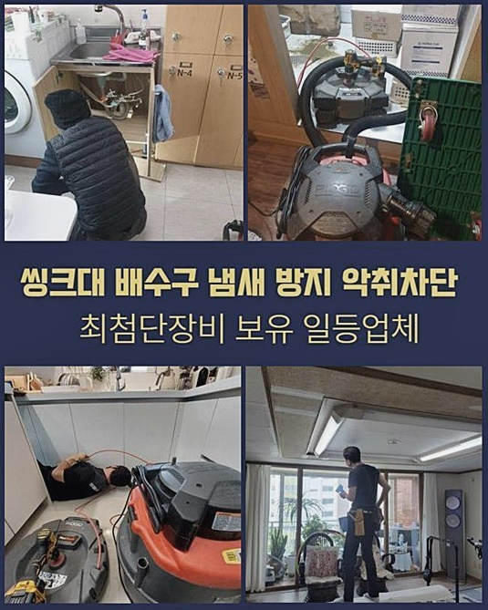
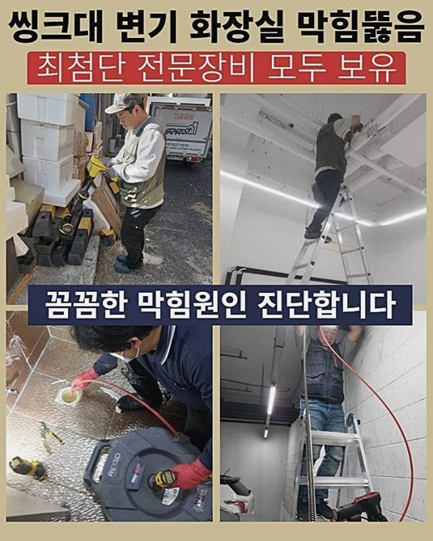
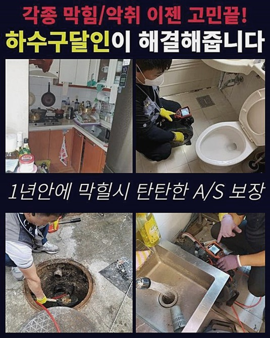
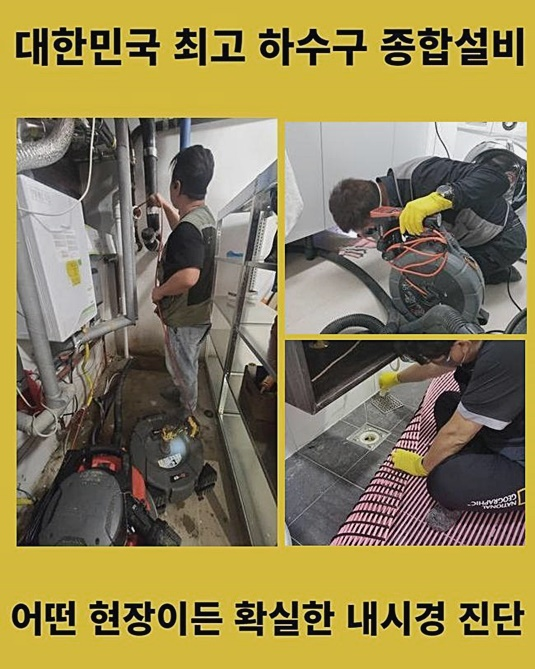
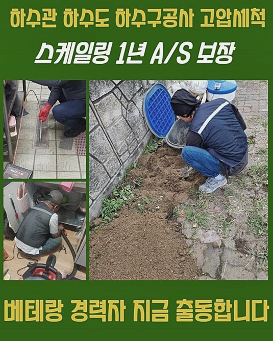

🏠 관악구 청룡동하수구역류 대학동 맨홀막힘 배관공사
용인 하수구막힘 전문 시공 후기

📋 작업 개요
- 위치: 용인
- 서비스 유형: 하수구막힘, 배관막힘, 맨홀막힘, 역류해결, 뚫는업체, 배관청소, 고압세척, 설비공사
- 작업 일시: 2024. 7. 10. 16:51
- 업체명: 하수구수사대 (010-5615-2118)
🔍 문제 상황
관악구 청룡동하수구역류 대학동 맨홀막힘 배관공사
평상시대로 지내다가 하수구에서 막힘현상이 발생하면 불편함이 느껴질텐데요
하수구가막히면 배수가 정상적으로 이루어지지않아 증세가 발생하는거죠
이번장소에서는 건물자체를 운영하고계시던 고객분께선 역류증세가 발현된것같다며 전화를주셨어요
배수구끝까지 물이찬 상태임을 말씀해주셨답니다
검사를해보려고 현장으로 방문드렸어요 하수구깊은곳은 확인하지못했지만 확실한건 하수도에 물이찬상태이죠
아래쪽부분에 많은양으로 오염물들이 쌓이면서 막히는문제가 발생한걸로 파악할수있었죠
악취문제까지 발현된 상태다보니 문제상태가 심각했어요
문제를 살피기위해 석션기를 준비했어요 넘쳐있는물을 제거하기위하여 석션장비로 흡입해내기 시작했는데요
넘쳐있는물이 제거되었어요 이런식으로 제거해주어야 하수구cctv를 활용하여 확실한 상태체크가 가능하답니다
내시경기기로 하수구내를 확인해볼준비를 마쳤어요
들여다보았더니 잔해물같은게 쌓인상태라는걸 파악할수있었죠
깊숙히 들어가서 살펴보고자 했었지만 잔여물때문에 내부투입이 어려웠습니다

🔎 원인 분석
💡 전문가 진단: 정밀 진단 장비를 사용하여 슬러지의 고착 여부를 판명하고 타격/세척 작업을 실시했습니다.
이런상황에서는 무리하여 투입해보는것보단 이물질부터 제거해서 통수해보는것이 우선이에요
현장상태마다 각기다르기에 이런점에서 작업경험을 요구하게됩니다
입구부분부터 이물이 쌓여있었기에 제거하고자했죠
분쇄장비를 이용해서 초입부쪽 이물들을 없애드렸답니다
배관통수를 통해서 분쇄기기를 내부쪽으로 투입되도록 해주었어요
플렉스샤프트기는 무식하게 뾰족한형태로 이루어져있지않으며 체인으로 이루고있답니다
체인쪽부분이 하수구속을 돌게되면서 하수도의 오염물을 없애는 방식이에요
배관에파손을 입히지않고 소거시킬수있어요
샤프트기계외에도 여러장비가 있답니다 막힌정도의 따라서 알맞게도구를 사용해봐야해요
과도하게 사용하다간 배관이깨져서 2차문제가 발현될수있죠
고압세척과정을 거치지않아도 대부분잔여물은 샤프트기계로 제거가능해요
그렇다고하더라도 이번현장처럼 막힘상태가 심각한경우 분해기계만을 활용해서는 없애기란 어렵다고보시면 되겠습니다
동네철물점을 방문하여 사장님께 부탁해서 막히는문제를 없애보려는 고객도계시죠

🔧 작업 과정
노련하신 전문가분이라면 문제가없겠지만 좋지않은 업체의경우 배관초입쪽만 뚫곤하셔서 저희들에게 많은사람들이 재차내방을 요청하시기도해요
제거작업을 할때 배관카메라도 동원하여 하수구속을 확인하며 이물질들을 제거할수있었죠
스켈링과정에서 틀림없이 배관카메라를 이용하여 하수도내부쪽을 들여다보며 진행해봐야하죠
굳은이물이 분쇄기계를 통해서 떼어지며 소거되는것을 확인하게되었죠
배관내벽쪽을 청소해보기로했어요 세척과정이 이루어지며 단단한고착물로 막히게된 배관가운데쪽이 뚫리게되며 통수를해결했어요
통수를하니 다른도구들이 원활히 투입되는 공간을만들었답니다
끈적한이물질이 발견되었으므로 오늘장소에서는 고압청소기를 활용해서 시도해야합니다
트럭과 연결되어진 고압세척도구를 꺼낸뒤 쌓여있는 이물질들을 제거해내면 된답니다
이물질로인해 빈틈이없이 막혀있다보니 밀어내주면서 없애면되겠습니다
고압세척과정은 이물소거외에도 깔끔하게 하수구세척까지 진행할수있어요
그렇지만 하수도의내구성을 신경쓰지않고 진행하게될경우 강한수압력이 작용하여 버티지못한채 파손될수있죠
손상이발생하면 하수도공사까지 이어질수있어요 2차피해가 일어나지않도록 내부모습을 체크해가며 진행되고있으니 염려마시길바래요
기계를이용하여 잔여물질이 있는곳을 신속하게 제거해보면되죠
이물이흘러나오며 막힘증세가 처리되는걸 확인할수있는데요
하수구에 그대로빠지게두면 연결된하수구에 이물이 쌓이면서 같은현상이 발현되게됩니다
그렇다보니 오염물을 건져올린후 따로처리해봐야 한답니다 작게분해가된채 빠지게된 슬러지가많았어요
원활한분쇄가 이어지지 않은곳을 처리해보기위해 배관내부로 샤프트기를 집어넣어 없애주면되죠
내시경도구를 통해 배관속을살피면서 상황에걸맞게 작업하고있으니 염려마세요
고착된이물을 깔끔히 제거한뒤 흡입기를 이용해 남겨진것들을 제거할수있었죠
청소작업시 살펴봐야할것은 하수관카메라로 확인하여 오염물이 잔여되지않아야 한다는점이에요
세세한작업이 이루어지지못하면 재차막힘이 발생할수있죠 하수구에서 깨끗한물로 흘러나오게끔 작업해드렸죠


✅ 작업 완료
하수구에 쌓여있던 이물이깨끗하게 해결된상태임을 파악했어요
막히는일이 없게끔 미리점검을하여 세척하실것을 요구드렸답니다
다양한하수가 흘러가는 하수구일경우 간헐적으로 점검해서 안전한상태의 하수관으로 이용하셨으면 좋겠습니다
어떤곳이라도 한시간안팎으로 도착해드릴수있고 분명한 수립계획으로 공개해드리니 안심하셔도 괜찮습니다
이밖에도 궁금증이 풀리지않았다면 연락주시면 자세하게 응대해드릴테니 편안하게 전화주세요!
막히는문제는 방치한다면 심각할수있으니 방치말고 막힘이 보이는즉시 대처하시는걸 추천드릴게요



⚠️ 하수구 배관 막힘 예방 및 관리 가이드
- ✅ 머리카락, 비닐, 물티슈 등 물에 분해되지 않는 이물질은 하수구 유입을 절대 금지해 주세요.
- ✅ 하수구 거름망을 씌우고 모여진 이물질은 주기적으로 쓰레기통에 바로 비워주셔야 합니다.
- ✅ 배관 노후가 심할 경우 이물질이 더 쉽게 걸리므로 주기적인 배관 세척(고압세척 등)을 권장합니다.
- ✅ 작업 후 1년 이내 재발 시 하수구수사대에서 무상 A/S 보증 서비스를 제공합니다.
💡 핵심 정리
- 확실한 장비 작업(내시경 점검 및 샤프트 스케일링)으로 원인을 뿌리 뽑습니다.
- 작업 후 1년 이내에 동일한 부위 재발 시 100% 무상 A/S 서비스를 보장합니다.
- 서울 · 경기 · 인천 전 지역에 24시간 언제든 긴급 출동할 수 있도록 항시 대기 중입니다.
❓ 자주 묻는 질문 (FAQ)
🚨 용인 하수구막힘 문제로 고민이신가요?
정확한 원인 진단과 확실한 시공으로 재발 없는 해결을 약속드립니다.
24시간 긴급 출동 | 서울 · 경기 · 인천 전지역 | 1년 내 재발 시 무상 A/S